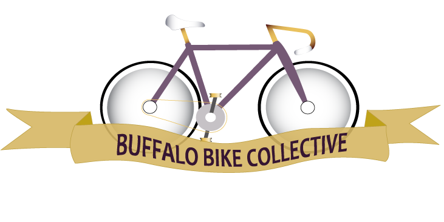

- Bike Types
- Bike Photos
-
- Bike Shops
Buffalo Bike Collective
A place where bike novice and enthusiasts can learn to play nice. It doesn't matter your choice of ride because your adventure is all your own. Explore and collectively share your experience so that we can make Buffalo a more bike conscience city.
Gear Up For an Adventure, Get Lost Here
Things you need for a day ride
- Water and lots of it. It's always a good idea to keep hydrated.
- Snacks or energy food, whatever that will help refuel you.
- Flat repair, in case you hit one too many pot holes.
- Emergency items i.e. Identification, Money and etc. You never know what can happen on a long bike ride.
Types of Bikes
- Single Speed
a single-speed bicycle is a type of bicycle with a single gear ratio. These bicycles are without derailleur gears, hub gearing or other methods for varying the gear ratio of the bicycle.
- Fixed Gear or Fixie
a fixed-gear bicycle (or fixed-wheel bicycle, commonly known as a fixie) is a that has a drivetrain with no freewheel. The freewheel was developed early in the history of bicycle design but the fixed-gear bicycle remained the standard track racing design. More recently the "fixie" has become a popular alternative among mainly urban cyclists, offering the advantages of simplicity compared with the standard multi-geared bicycle.
- Road
a term used to describe bicycles built for traveling at speed on paved roads. Some sources use the term to mean racing bicycle. Other sources specifically exclude racing bicycles from the definition, using the term to mean a bicycle of a similar style but built more for endurance and less the fast bursts of speed desired in a racing bicycle; as such, they usually have more gear combinations and fewer hi-tech racing features.
- Track
a track bicycle or track bike is a bicycle optimized for racing at a velodrome or outdoor track. Unlike road bicycles, the track bike is a fixed-gear bicycle; thus, it has only a single gear and has neither a freewheel nor brakes. Tires are narrow and inflated to high pressure to reduce rolling resistance. Tubular tires are most often used in track racing and training, though advances in clincher tire design have seen them being used somewhat more often.
Bike Pics of the Month
Bike Shops
TOP
 01
01 02
02 03
03 04
04 05
05 06
06